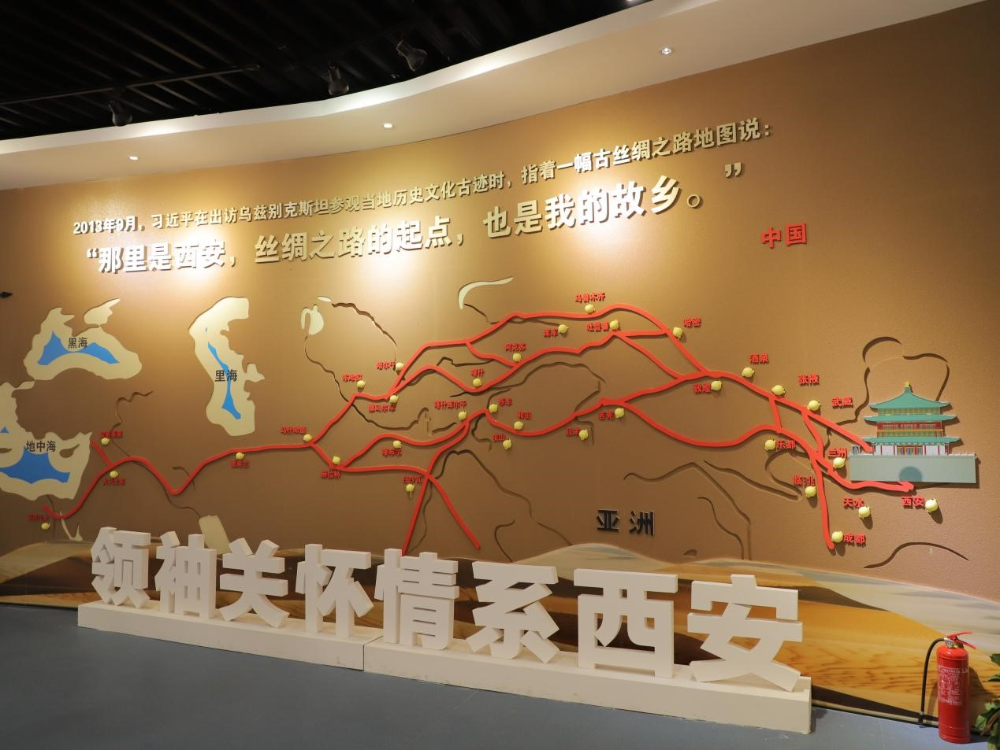

8月8日下午，陕西万盛达信息科技有限公司党支部组织多名党员与群众代表，赴曲江新区唐城墙遗址公园参观西安市纪委监委举办的“重塑政治生态 奋力推进国际化大都市建设”主题展览。
整场展览分为责任篇、肃毒篇、筑梦篇、愿景篇4个篇幅，采用丰富翔实的文字和图片资料，同时配以大屏幕、触摸互动屏、电子沙盘等多种形式，全面展示了西安市开展肃清魏民洲等流毒影响，推进全面从严治党和反腐败斗争取得的新进展、新成效。

展馆掠影
在展馆工作人员的带领下，大家仔细聆听了魏民洲等违纪违法典型案例讲解，认真观看了案件剖析视频和全市开展肃清流毒的情况介绍，并通过电子沙盘，充分了解了肃清魏民洲等流毒影响以来，西安在政治、经济、文化、民生、生态等方面发生的巨大变化。
聆听讲解
观看展品
看到展出的关于西安建设国际化大都市的战略部署，大家纷纷表示对大西安追赶超越、振兴发展充满了信心，并立志在建设美丽大西安的道路上，不忘初心，牢记使命，努力做好本职工作，为这座城市增添更多正能量。